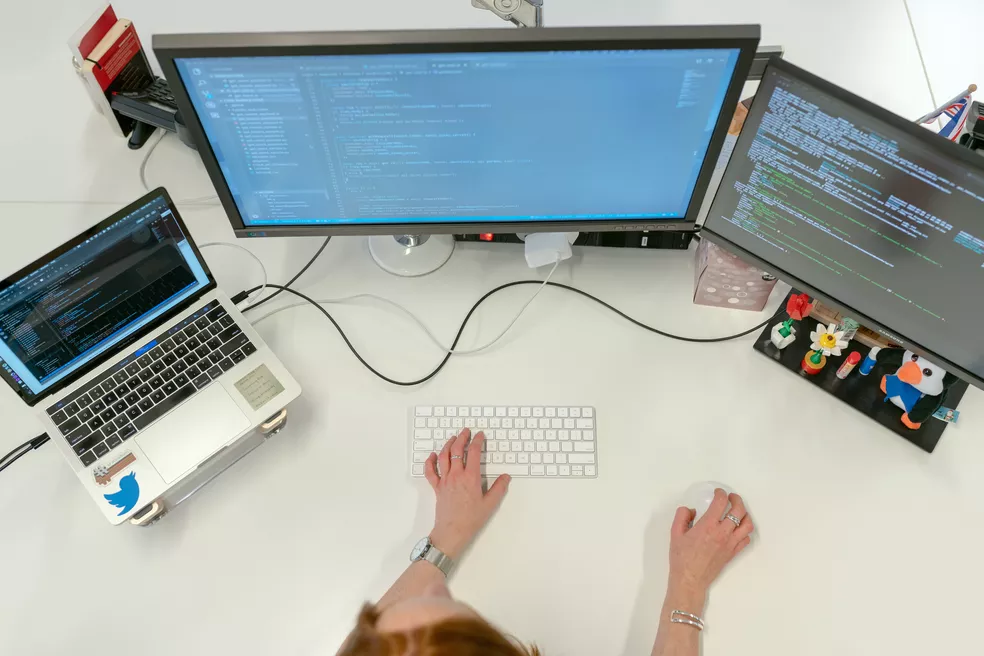

Guia para carreira em TI: profissões, salários, por onde começar e como se desenvolver em tecnologia
Com falta de mão de obra, a área conta com alta remuneração e dá oportunidades.
Trabalhador ou máquina? As 10 ocupaçes com maior (e menor) chance de sumir no Brasil

Mentiras podem acabar em demissão por justa causa: Entenda
belhas sem ferrão revelam tesouro do Brasil para gastronomia, cosméticos e remédios

Conheça o potencial pouco explorado.